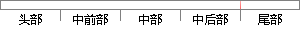

内存控制块主要用来记录内存分区的状态信息，其定义如下所示。
片段位置图

相似结果
相似片段： 内存分区及内存块的使用情况由内存控制块来记录。 ...注意:上面这个定义只是在内存中划分出了分区及内存块...存放分区状态信息的结构的指针 OS_MEM_DATA结构如下...
| 标题 | 《第6章 内存的动态分配_百度文库》 |
| 对比库 | PaperRater云论文库 |
| 网址 | http://wenku.baidu.com/link?url=YK4ZfzBnLhaJMjXHdPO9icCZP-A0alo8YCRsrenUwisJkuUH9-KJDn1KmFYNO3ZyqhrCkBHNpYFQH8h--mxdoq-ZQ2vCIthNR_Z3Kb3FnBe |
| 相似率 | 75% （轻度抄袭） |
※ 片段修改建议 ※
近似词参考：- 主要：首要 重要
- 如下：以下
- 控制：节制
- 定义：界说
- 状态：状况
- 记录：记实 纪录 记载
系统自动生成语句： 内存节制块首要用来记实内存分区的状况信息，其界说以下所示。
注：本片段修改建议为系统自动生成，仅供参考。